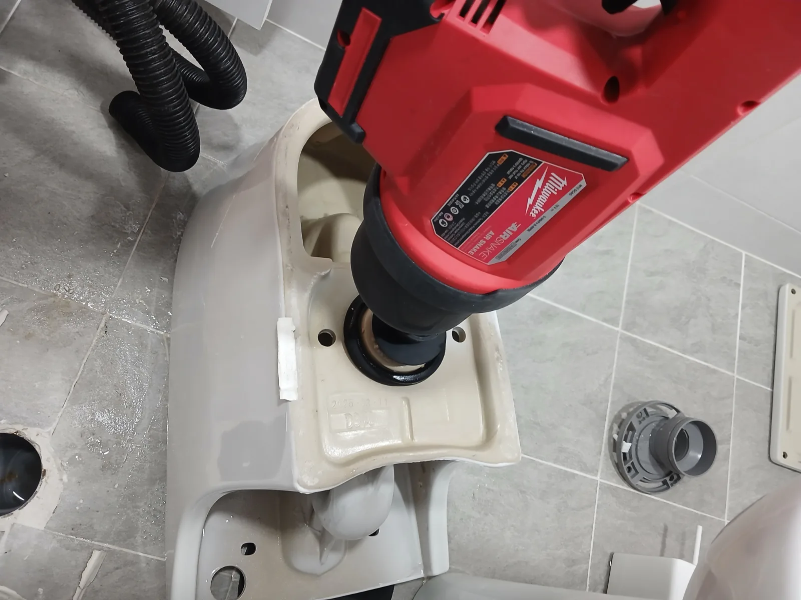

서초구 반포동 변기막힘, 현장 도착 후 진단
샤워 후 빗질을 하다 변기에 빠뜨림
도착 당시 물은 내려가지만 아주 천천히 내려감
1단계: 증상 확인과 필요한 장비 작업
석션으로 변기 내부에 있는 빗을 뽑아내보려 시도함

2단계: 원인 구간 처리와 정상 작동 확인
변기를 완전 탈거 후 뒷 변기 배관에 에어건을 이용하여 밖으로 배출할수있게 함

작업 결과와 재발 방지 안내
변기 입구 배관쪽으로 빗과 휴지 뭉치가 나왔고 노출된 오수관 점검결과 이상없음 예방점검 완료
최종 조치: 석션으로 뽑아내려고 했으나 실패, 변기 탈거 후 하부에서 밀어줘서 이물질 제거
현장 방문 전 확인하는 비용과 작업 범위
신라건축설비는 현장 증상과 배관 구조를 확인한 뒤 필요한 작업과 예상 비용을 안내합니다. 단순 관통으로 해결되는지, 배관내시경·석션·고압세척 또는 변기 탈거가 필요한지는 현장 상태에 따라 달라집니다. 출장비와 야간 작업비, 추가 장비 비용이 발생할 수 있는 경우 작업 전에 먼저 설명하고 동의를 받은 범위에서 진행합니다.
업체를 선택할 때 확인할 사항
무조건적인 ‘0원’ 표현보다 실제 작업 범위, 추가 비용 조건, 사용 장비와 사후 대응 기준을 확인하는 것이 중요합니다. 해결되지 않았을 때의 비용 기준과 작업 후 동일 증상 발생 시 점검 범위를 사전에 문의해두면 불필요한 분쟁을 줄일 수 있습니다.
서초구 변기막힘 자주 묻는 질문
변기를 꼭 탈거해야 하나요?
물이 빠지긴하지만 천천히 내려감처럼 증상이 나타나더라도 원인은 현장마다 다를 수 있습니다. 장비와 배관 구조를 확인한 뒤 필요한 작업 범위를 안내합니다.
작업 전 비용을 알 수 있나요?
작업 전 증상과 현장 여건을 확인해 예상 범위와 비용을 먼저 안내합니다. 변기 탈거, 장비 추가 투입 또는 공용배관 작업이 필요한 경우 고객 동의 없이 임의로 진행하지 않습니다.
같은 증상이 다시 생기면 어떻게 하나요?
완료 후 정상 작동을 함께 확인하고 작업 범위에 따른 사후 안내를 드립니다. 동일 증상이 반복되면 현장 기록을 기준으로 원인을 다시 점검합니다.